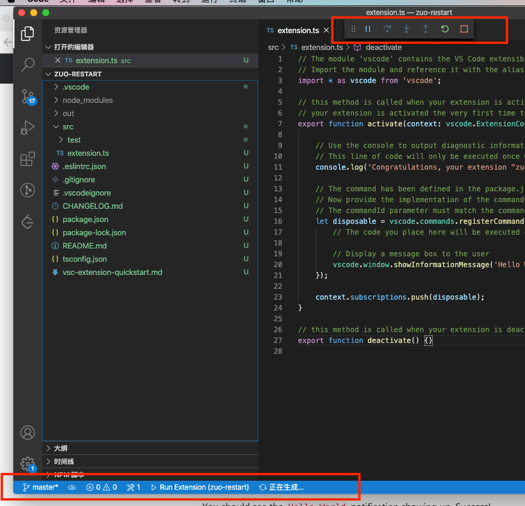
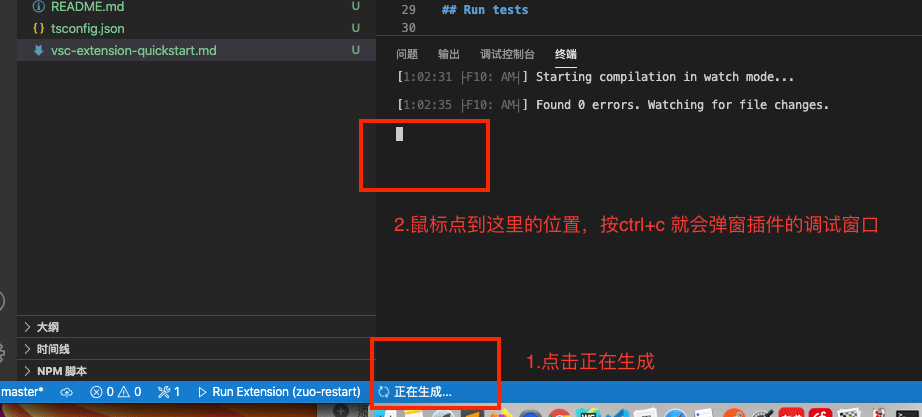
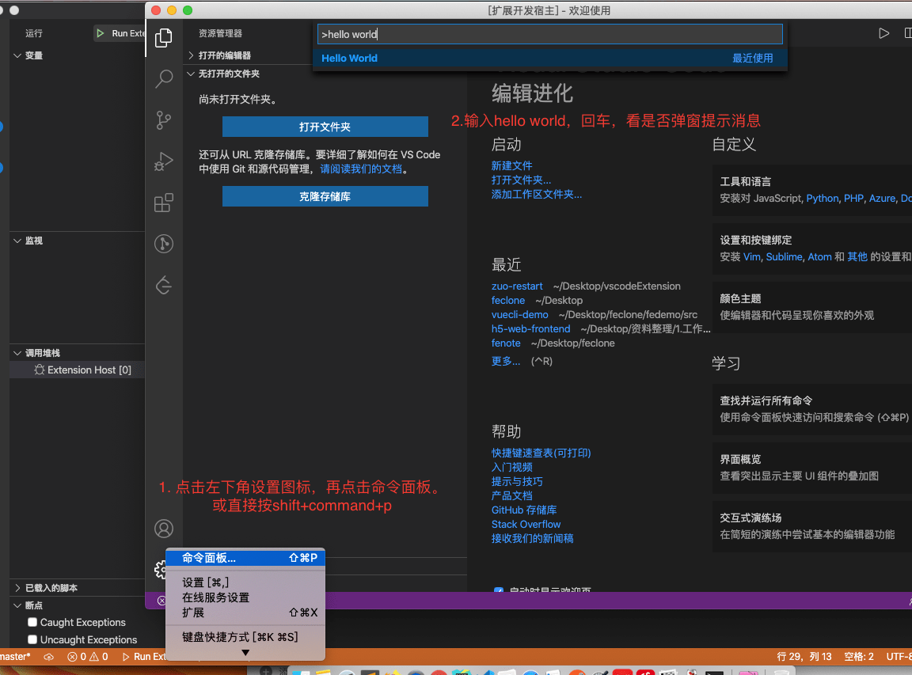
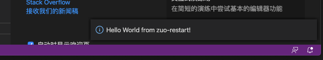

2020/10/08
Author: guoqzuo
怎么开发vscode插件
在vue-cli项目中，每次修改vue.config.js都需要手动停止在运行，怎么一键就搞定呢？能不能开发个vscode插件
带着这个问题，来看看vscode插件的开发。直接找vscode官方教程。按照文档先来跑一个hello word
# Install Yeoman and VS Code Extension Generator with:
npm install -g yo generator-code运行yo code，生成一个脚手架项目
guoqzuo-mac:vscodeExtension kevin$ yo code
_-----_ ╭──────────────────────────╮
| | │ Welcome to the Visual │
|--(o)--| │ Studio Code Extension │
`---------´ │ generator! │
( _´U`_ ) ╰──────────────────────────╯
/___A___\ /
| ~ |
__'.___.'__
´ ` |° ´ Y `
? What type of extension do you want to create? New Extension (TypeScript)
? What's the name of your extension? zuo-restart
? What's the identifier of your extension? zuo-restart
? What's the description of your extension? A plugin use to auto restart vue.con
fig.js
? Initialize a git repository? Yes
? Which package manager to use? npm
Your extension zuo-restart has been created!
To start editing with Visual Studio Code, use the following commands:
cd zuo-restart
code .
Open vsc-extension-quickstart.md inside the new extension for further instructions
on how to modify, test and publish your extension.
For more information, also visit http://code.visualstudio.com and follow us @code.这样会创建一个空的项目，只注册了helloworld命令，我们按照 vsc-extension-quickstart.md 里的说明运行demo
按F5，进入如下页面，但并没有像官网上的视频那样弹一个新的插件调试窗口，一直在运行中

网上说要装一个 run code的 vscode插件，也装了。后面发现还是不行，点击正在生成，ctrl + c 就弹出一个名为 "扩展开发宿主" 的新窗口了，里面可以调试插件，如下图

生成项目的入口是 extension.ts，他默认注册了一个helloword命令，我们输入命令就会显示一个弹窗消息
// The module 'vscode' contains the VS Code extensibility API
// Import the module and reference it with the alias vscode in your code below
import * as vscode from 'vscode';
// this method is called when your extension is activated
// your extension is activated the very first time the command is executed
export function activate(context: vscode.ExtensionContext) {
// Use the console to output diagnostic information (console.log) and errors (console.error)
// This line of code will only be executed once when your extension is activated
console.log('Congratulations, your extension "zuo-restart" is now active!');
// The command has been defined in the package.json file
// Now provide the implementation of the command with registerCommand
// The commandId parameter must match the command field in package.json
let disposable = vscode.commands.registerCommand('zuo-restart.helloWorld', () => {
// The code you place here will be executed every time your command is executed
// Display a message box to the user
vscode.window.showInformationMessage('Hello World from zuo-restart!');
});
context.subscriptions.push(disposable);
}
// this method is called when your extension is deactivated
export function deactivate() {}
我们在插件调试窗口跑下hello world命令

出现如下弹窗消息，就说明跑的没问题了

这样hellowrod就跑起来了，vsc-extension-quickstart.md 里面有构架、发布插件的文档说明
官网提供了一些简单的demo，可以练练手，vscode-extension-samples | github，后续有时间了继续研究
参考：